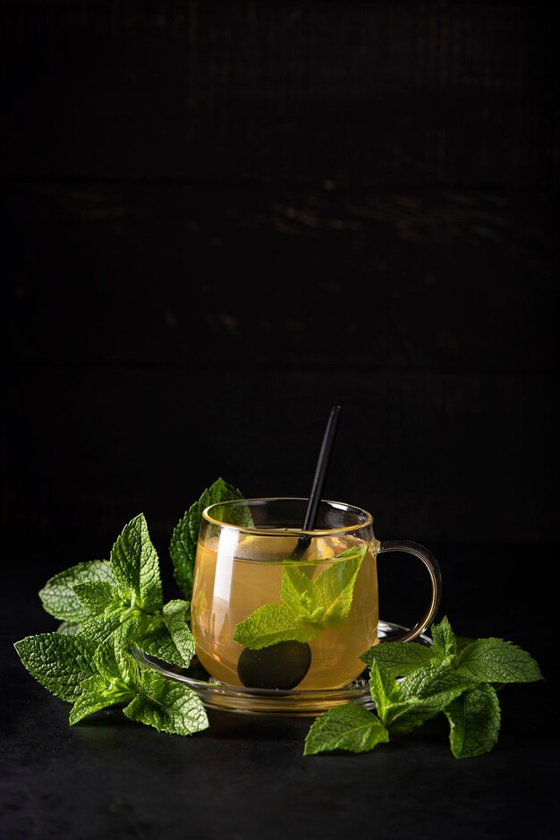

- RECEITA
- Ferva 200 ml de água.
- Coloque 1 a 2 colheres de chá de folhas de hortelã frescas ou secas em uma xícara.
- INFUSÃO
- Despeje a água fervente sobre as folhas de hortelã na xícara.
- Cubra a xícara e deixe em infusão por cerca de 5-7 minutos para liberar os sabores e o aroma refrescante da hortelã.

Menta
Refrescância e Vitalidade em Cada Gole, Uma Deliciosa Brisa de Sabor.